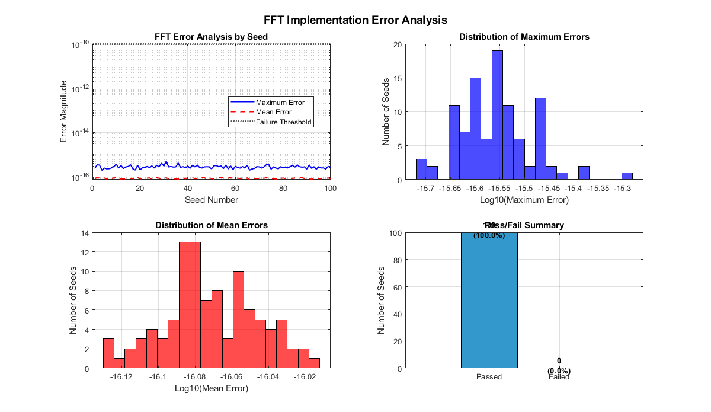

clear; clc; close all;
L = 100;
N = 8;
nSeeds = 100;
seed_errors = zeros(nSeeds, 1);
seed_mean_errors = zeros(nSeeds, 1);
seed_status = zeros(nSeeds, 1);
fprintf('Running FFT error analysis for %d seeds...\n\n', nSeeds);
for seed = 1 : nSeeds
rng(seed);
x_real = randn(L, N);
x_imag = randn(L, N);
x = x_real + 1j * x_imag;
y = zeros(L, N);
for test_case = 1:L
y(test_case, :) = fft_trans_mex(x(test_case, :));
end
test_errors = zeros(L, 1);
test_passed = true;
for test_case = 1:L
y_expected = fft(x(test_case, :));
error_magnitude = abs(mean(y(test_case, :) - y_expected));
test_errors(test_case) = error_magnitude;
if error_magnitude > 1e-10
fprintf('Seed %d: Test case %d failed with error: %.2e\n', seed, test_case, error_magnitude);
test_passed = false;
break;
end
end
seed_errors(seed) = max(test_errors);
seed_mean_errors(seed) = mean(test_errors);
seed_status(seed) = test_passed;
if test_passed
fprintf('Seed %d: All %d test cases passed! Max error: %.2e, Mean error: %.2e\n', ...
seed, L, seed_errors(seed), seed_mean_errors(seed));
end
end
fprintf('\n=== SUMMARY RESULTS ===\n');
passed_seeds = sum(seed_status);
failed_seeds = nSeeds - passed_seeds;
fprintf('Seeds passed: %d/%d (%.1f%%)\n', passed_seeds, nSeeds, 100*passed_seeds/nSeeds);
fprintf('Seeds failed: %d/%d (%.1f%%)\n', failed_seeds, nSeeds, 100*failed_seeds/nSeeds);
fprintf('Overall maximum error: %.2e\n', max(seed_errors));
fprintf('Overall mean error: %.2e\n', mean(seed_mean_errors));
fprintf('Standard deviation of errors: %.2e\n', std(seed_mean_errors));
figure('Position', [100, 100, 1200, 800]);
subplot(2, 2, 1);
semilogy(1:nSeeds, seed_errors, 'b-', 'LineWidth', 1.5);
hold on;
semilogy(1:nSeeds, seed_mean_errors, 'r--', 'LineWidth', 1.5);
yline(1e-10, 'k:', 'LineWidth', 2, 'DisplayName', 'Failure Threshold');
xlabel('Seed Number');
ylabel('Error Magnitude');
title('FFT Error Analysis by Seed');
legend('Maximum Error', 'Mean Error', 'Failure Threshold', 'Location', 'best');
grid on;
subplot(2, 2, 2);
histogram(log10(seed_errors), 20, 'FaceColor', 'blue', 'FaceAlpha', 0.7);
xlabel('Log10(Maximum Error)');
ylabel('Number of Seeds');
title('Distribution of Maximum Errors');
grid on;
subplot(2, 2, 3);
histogram(log10(seed_mean_errors), 20, 'FaceColor', 'red', 'FaceAlpha', 0.7);
xlabel('Log10(Mean Error)');
ylabel('Number of Seeds');
title('Distribution of Mean Errors');
grid on;
subplot(2, 2, 4);
bar([passed_seeds, failed_seeds], 'FaceColor', [0.2, 0.6, 0.8]);
set(gca, 'XTickLabel', {'Passed', 'Failed'});
ylabel('Number of Seeds');
title('Pass/Fail Summary');
for i = 1:2
if i == 1
text(i, passed_seeds + 2, sprintf('%d\n(%.1f%%)', passed_seeds, 100*passed_seeds/nSeeds), ...
'HorizontalAlignment', 'center', 'FontWeight', 'bold');
else
text(i, failed_seeds + 2, sprintf('%d\n(%.1f%%)', failed_seeds, 100*failed_seeds/nSeeds), ...
'HorizontalAlignment', 'center', 'FontWeight', 'bold');
end
end
grid on;
sgtitle('FFT Implementation Error Analysis', 'FontSize', 14, 'FontWeight', 'bold');
fprintf('\n=== DETAILED ERROR TABLE ===\n');
fprintf('Seed\tStatus\t\tMax Error\tMean Error\n');
fprintf('----\t------\t\t---------\t----------\n');
for i = 1:min(100, nSeeds)
status_str = {'FAILED', 'PASSED'};
fprintf('%3d\t%s\t\t%.2e\t%.2e\n', i, status_str{seed_status(i)+1}, seed_errors(i), seed_mean_errors(i));
end
if nSeeds > 100
fprintf('... (showing first 50 of %d seeds)\n', nSeeds);
end
results_table = table((1:nSeeds)', seed_status, seed_errors, seed_mean_errors, ...
'VariableNames', {'Seed', 'Passed', 'MaxError', 'MeanError'});
writetable(results_table, 'fft_error_results.csv');
fprintf('\nResults saved to: fft_error_results.csv\n');
Running FFT error analysis for 100 seeds...
Seed 1: All 100 test cases passed! Max error: 2.38e-16, Mean error: 8.18e-17
Seed 2: All 100 test cases passed! Max error: 3.48e-16, Mean error: 9.22e-17
Seed 3: All 100 test cases passed! Max error: 3.38e-16, Mean error: 8.59e-17
Seed 4: All 100 test cases passed! Max error: 1.97e-16, Mean error: 7.88e-17
Seed 5: All 100 test cases passed! Max error: 2.48e-16, Mean error: 8.83e-17
Seed 6: All 100 test cases passed! Max error: 2.29e-16, Mean error: 7.79e-17
Seed 7: All 100 test cases passed! Max error: 2.31e-16, Mean error: 9.51e-17
Seed 8: All 100 test cases passed! Max error: 2.51e-16, Mean error: 8.26e-17
Seed 9: All 100 test cases passed! Max error: 2.90e-16, Mean error: 8.86e-17
Seed 10: All 100 test cases passed! Max error: 3.70e-16, Mean error: 9.69e-17
Seed 11: All 100 test cases passed! Max error: 2.48e-16, Mean error: 8.21e-17
Seed 12: All 100 test cases passed! Max error: 3.24e-16, Mean error: 7.86e-17
Seed 13: All 100 test cases passed! Max error: 2.36e-16, Mean error: 8.38e-17
Seed 14: All 100 test cases passed! Max error: 2.78e-16, Mean error: 7.70e-17
Seed 15: All 100 test cases passed! Max error: 2.91e-16, Mean error: 8.00e-17
Seed 16: All 100 test cases passed! Max error: 3.51e-16, Mean error: 8.50e-17
Seed 17: All 100 test cases passed! Max error: 2.29e-16, Mean error: 8.15e-17
Seed 18: All 100 test cases passed! Max error: 2.00e-16, Mean error: 7.43e-17
Seed 19: All 100 test cases passed! Max error: 3.34e-16, Mean error: 9.52e-17
Seed 20: All 100 test cases passed! Max error: 2.08e-16, Mean error: 8.12e-17
Seed 21: All 100 test cases passed! Max error: 2.53e-16, Mean error: 8.39e-17
Seed 22: All 100 test cases passed! Max error: 2.62e-16, Mean error: 8.42e-17
Seed 23: All 100 test cases passed! Max error: 2.93e-16, Mean error: 8.72e-17
Seed 24: All 100 test cases passed! Max error: 2.57e-16, Mean error: 8.79e-17
Seed 25: All 100 test cases passed! Max error: 3.10e-16, Mean error: 7.98e-17
Seed 26: All 100 test cases passed! Max error: 2.48e-16, Mean error: 8.42e-17
Seed 27: All 100 test cases passed! Max error: 3.33e-16, Mean error: 9.39e-17
Seed 28: All 100 test cases passed! Max error: 2.83e-16, Mean error: 8.51e-17
Seed 29: All 100 test cases passed! Max error: 4.16e-16, Mean error: 8.21e-17
Seed 30: All 100 test cases passed! Max error: 3.07e-16, Mean error: 8.95e-17
Seed 31: All 100 test cases passed! Max error: 5.06e-16, Mean error: 8.78e-17
Seed 32: All 100 test cases passed! Max error: 2.78e-16, Mean error: 8.37e-17
Seed 33: All 100 test cases passed! Max error: 2.93e-16, Mean error: 8.34e-17
Seed 34: All 100 test cases passed! Max error: 2.74e-16, Mean error: 8.02e-17
Seed 35: All 100 test cases passed! Max error: 2.79e-16, Mean error: 8.16e-17
Seed 36: All 100 test cases passed! Max error: 4.22e-16, Mean error: 7.73e-17
Seed 37: All 100 test cases passed! Max error: 2.64e-16, Mean error: 8.57e-17
Seed 38: All 100 test cases passed! Max error: 2.86e-16, Mean error: 9.12e-17
Seed 39: All 100 test cases passed! Max error: 2.50e-16, Mean error: 8.13e-17
Seed 40: All 100 test cases passed! Max error: 3.08e-16, Mean error: 8.86e-17
Seed 41: All 100 test cases passed! Max error: 2.42e-16, Mean error: 8.20e-17
Seed 42: All 100 test cases passed! Max error: 3.35e-16, Mean error: 9.06e-17
Seed 43: All 100 test cases passed! Max error: 2.81e-16, Mean error: 8.33e-17
Seed 44: All 100 test cases passed! Max error: 3.39e-16, Mean error: 8.32e-17
Seed 45: All 100 test cases passed! Max error: 2.65e-16, Mean error: 8.32e-17
Seed 46: All 100 test cases passed! Max error: 2.48e-16, Mean error: 8.83e-17
Seed 47: All 100 test cases passed! Max error: 2.78e-16, Mean error: 9.34e-17
Seed 48: All 100 test cases passed! Max error: 2.84e-16, Mean error: 7.44e-17
Seed 49: All 100 test cases passed! Max error: 2.79e-16, Mean error: 8.80e-17
Seed 50: All 100 test cases passed! Max error: 2.28e-16, Mean error: 8.30e-17
Seed 51: All 100 test cases passed! Max error: 3.12e-16, Mean error: 7.87e-17
Seed 52: All 100 test cases passed! Max error: 3.24e-16, Mean error: 9.33e-17
Seed 53: All 100 test cases passed! Max error: 2.86e-16, Mean error: 9.13e-17
Seed 54: All 100 test cases passed! Max error: 3.07e-16, Mean error: 9.21e-17
Seed 55: All 100 test cases passed! Max error: 2.36e-16, Mean error: 9.13e-17
Seed 56: All 100 test cases passed! Max error: 3.38e-16, Mean error: 8.36e-17
Seed 57: All 100 test cases passed! Max error: 2.26e-16, Mean error: 8.68e-17
Seed 58: All 100 test cases passed! Max error: 3.10e-16, Mean error: 9.05e-17
Seed 59: All 100 test cases passed! Max error: 2.08e-16, Mean error: 8.33e-17
Seed 60: All 100 test cases passed! Max error: 2.99e-16, Mean error: 8.58e-17
Seed 61: All 100 test cases passed! Max error: 2.62e-16, Mean error: 8.62e-17
Seed 62: All 100 test cases passed! Max error: 2.45e-16, Mean error: 8.23e-17
Seed 63: All 100 test cases passed! Max error: 2.90e-16, Mean error: 8.83e-17
Seed 64: All 100 test cases passed! Max error: 2.51e-16, Mean error: 7.66e-17
Seed 65: All 100 test cases passed! Max error: 3.33e-16, Mean error: 8.97e-17
Seed 66: All 100 test cases passed! Max error: 2.00e-16, Mean error: 7.44e-17
Seed 67: All 100 test cases passed! Max error: 2.26e-16, Mean error: 8.98e-17
Seed 68: All 100 test cases passed! Max error: 2.36e-16, Mean error: 8.42e-17
Seed 69: All 100 test cases passed! Max error: 2.86e-16, Mean error: 8.23e-17
Seed 70: All 100 test cases passed! Max error: 2.79e-16, Mean error: 8.11e-17
Seed 71: All 100 test cases passed! Max error: 2.48e-16, Mean error: 8.77e-17
Seed 72: All 100 test cases passed! Max error: 2.79e-16, Mean error: 8.56e-17
Seed 73: All 100 test cases passed! Max error: 3.47e-16, Mean error: 9.22e-17
Seed 74: All 100 test cases passed! Max error: 3.61e-16, Mean error: 7.78e-17
Seed 75: All 100 test cases passed! Max error: 2.22e-16, Mean error: 8.24e-17
Seed 76: All 100 test cases passed! Max error: 2.79e-16, Mean error: 8.37e-17
Seed 77: All 100 test cases passed! Max error: 2.50e-16, Mean error: 7.84e-17
Seed 78: All 100 test cases passed! Max error: 2.29e-16, Mean error: 8.20e-17
Seed 79: All 100 test cases passed! Max error: 2.83e-16, Mean error: 8.35e-17
Seed 80: All 100 test cases passed! Max error: 2.61e-16, Mean error: 8.85e-17
Seed 81: All 100 test cases passed! Max error: 2.62e-16, Mean error: 8.25e-17
Seed 82: All 100 test cases passed! Max error: 2.51e-16, Mean error: 8.75e-17
Seed 83: All 100 test cases passed! Max error: 2.86e-16, Mean error: 8.55e-17
Seed 84: All 100 test cases passed! Max error: 3.33e-16, Mean error: 8.43e-17
Seed 85: All 100 test cases passed! Max error: 2.73e-16, Mean error: 8.80e-17
Seed 86: All 100 test cases passed! Max error: 3.43e-16, Mean error: 9.30e-17
Seed 87: All 100 test cases passed! Max error: 2.83e-16, Mean error: 9.03e-17
Seed 88: All 100 test cases passed! Max error: 2.73e-16, Mean error: 9.26e-17
Seed 89: All 100 test cases passed! Max error: 2.78e-16, Mean error: 8.19e-17
Seed 90: All 100 test cases passed! Max error: 2.24e-16, Mean error: 8.85e-17
Seed 91: All 100 test cases passed! Max error: 3.43e-16, Mean error: 8.40e-17
Seed 92: All 100 test cases passed! Max error: 2.40e-16, Mean error: 7.57e-17
Seed 93: All 100 test cases passed! Max error: 2.83e-16, Mean error: 8.88e-17
Seed 94: All 100 test cases passed! Max error: 2.22e-16, Mean error: 8.37e-17
Seed 95: All 100 test cases passed! Max error: 2.81e-16, Mean error: 8.19e-17
Seed 96: All 100 test cases passed! Max error: 2.51e-16, Mean error: 8.27e-17
Seed 97: All 100 test cases passed! Max error: 2.51e-16, Mean error: 8.57e-17
Seed 98: All 100 test cases passed! Max error: 2.24e-16, Mean error: 8.37e-17
Seed 99: All 100 test cases passed! Max error: 2.95e-16, Mean error: 8.83e-17
Seed 100: All 100 test cases passed! Max error: 2.50e-16, Mean error: 8.08e-17
=== SUMMARY RESULTS ===
Seeds passed: 100/100 (100.0%)
Seeds failed: 0/100 (0.0%)
Overall maximum error: 5.06e-16
Overall mean error: 8.50e-17
Standard deviation of errors: 4.99e-18
=== DETAILED ERROR TABLE ===
Seed Status Max Error Mean Error
---- ------ --------- ----------
1 PASSED 2.38e-16 8.18e-17
2 PASSED 3.48e-16 9.22e-17
3 PASSED 3.38e-16 8.59e-17
4 PASSED 1.97e-16 7.88e-17
5 PASSED 2.48e-16 8.83e-17
6 PASSED 2.29e-16 7.79e-17
7 PASSED 2.31e-16 9.51e-17
8 PASSED 2.51e-16 8.26e-17
9 PASSED 2.90e-16 8.86e-17
10 PASSED 3.70e-16 9.69e-17
11 PASSED 2.48e-16 8.21e-17
12 PASSED 3.24e-16 7.86e-17
13 PASSED 2.36e-16 8.38e-17
14 PASSED 2.78e-16 7.70e-17
15 PASSED 2.91e-16 8.00e-17
16 PASSED 3.51e-16 8.50e-17
17 PASSED 2.29e-16 8.15e-17
18 PASSED 2.00e-16 7.43e-17
19 PASSED 3.34e-16 9.52e-17
20 PASSED 2.08e-16 8.12e-17
21 PASSED 2.53e-16 8.39e-17
22 PASSED 2.62e-16 8.42e-17
23 PASSED 2.93e-16 8.72e-17
24 PASSED 2.57e-16 8.79e-17
25 PASSED 3.10e-16 7.98e-17
26 PASSED 2.48e-16 8.42e-17
27 PASSED 3.33e-16 9.39e-17
28 PASSED 2.83e-16 8.51e-17
29 PASSED 4.16e-16 8.21e-17
30 PASSED 3.07e-16 8.95e-17
31 PASSED 5.06e-16 8.78e-17
32 PASSED 2.78e-16 8.37e-17
33 PASSED 2.93e-16 8.34e-17
34 PASSED 2.74e-16 8.02e-17
35 PASSED 2.79e-16 8.16e-17
36 PASSED 4.22e-16 7.73e-17
37 PASSED 2.64e-16 8.57e-17
38 PASSED 2.86e-16 9.12e-17
39 PASSED 2.50e-16 8.13e-17
40 PASSED 3.08e-16 8.86e-17
41 PASSED 2.42e-16 8.20e-17
42 PASSED 3.35e-16 9.06e-17
43 PASSED 2.81e-16 8.33e-17
44 PASSED 3.39e-16 8.32e-17
45 PASSED 2.65e-16 8.32e-17
46 PASSED 2.48e-16 8.83e-17
47 PASSED 2.78e-16 9.34e-17
48 PASSED 2.84e-16 7.44e-17
49 PASSED 2.79e-16 8.80e-17
50 PASSED 2.28e-16 8.30e-17
51 PASSED 3.12e-16 7.87e-17
52 PASSED 3.24e-16 9.33e-17
53 PASSED 2.86e-16 9.13e-17
54 PASSED 3.07e-16 9.21e-17
55 PASSED 2.36e-16 9.13e-17
56 PASSED 3.38e-16 8.36e-17
57 PASSED 2.26e-16 8.68e-17
58 PASSED 3.10e-16 9.05e-17
59 PASSED 2.08e-16 8.33e-17
60 PASSED 2.99e-16 8.58e-17
61 PASSED 2.62e-16 8.62e-17
62 PASSED 2.45e-16 8.23e-17
63 PASSED 2.90e-16 8.83e-17
64 PASSED 2.51e-16 7.66e-17
65 PASSED 3.33e-16 8.97e-17
66 PASSED 2.00e-16 7.44e-17
67 PASSED 2.26e-16 8.98e-17
68 PASSED 2.36e-16 8.42e-17
69 PASSED 2.86e-16 8.23e-17
70 PASSED 2.79e-16 8.11e-17
71 PASSED 2.48e-16 8.77e-17
72 PASSED 2.79e-16 8.56e-17
73 PASSED 3.47e-16 9.22e-17
74 PASSED 3.61e-16 7.78e-17
75 PASSED 2.22e-16 8.24e-17
76 PASSED 2.79e-16 8.37e-17
77 PASSED 2.50e-16 7.84e-17
78 PASSED 2.29e-16 8.20e-17
79 PASSED 2.83e-16 8.35e-17
80 PASSED 2.61e-16 8.85e-17
81 PASSED 2.62e-16 8.25e-17
82 PASSED 2.51e-16 8.75e-17
83 PASSED 2.86e-16 8.55e-17
84 PASSED 3.33e-16 8.43e-17
85 PASSED 2.73e-16 8.80e-17
86 PASSED 3.43e-16 9.30e-17
87 PASSED 2.83e-16 9.03e-17
88 PASSED 2.73e-16 9.26e-17
89 PASSED 2.78e-16 8.19e-17
90 PASSED 2.24e-16 8.85e-17
91 PASSED 3.43e-16 8.40e-17
92 PASSED 2.40e-16 7.57e-17
93 PASSED 2.83e-16 8.88e-17
94 PASSED 2.22e-16 8.37e-17
95 PASSED 2.81e-16 8.19e-17
96 PASSED 2.51e-16 8.27e-17
97 PASSED 2.51e-16 8.57e-17
98 PASSED 2.24e-16 8.37e-17
99 PASSED 2.95e-16 8.83e-17
100 PASSED 2.50e-16 8.08e-17
Results saved to: fft_error_results.csv
